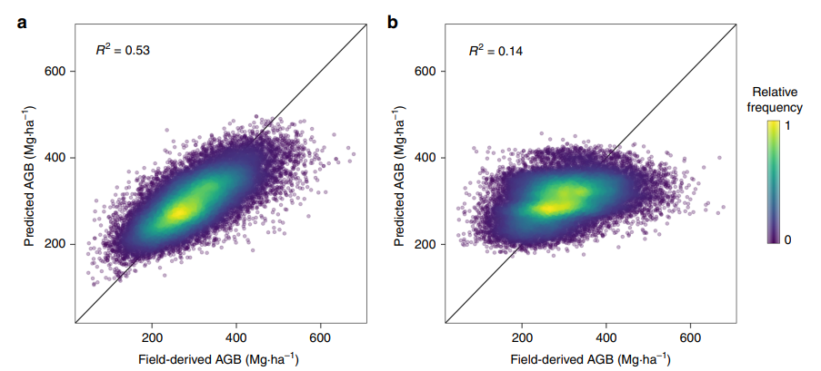

Week 7
Summary
This week we went through the following topics in the lecture and the practical:
classification (continuing from the previous week)
- pre-classified data
- Object-based image analysis
- Sub pixel analysis
accuracy assessment
- error matrix and kappa
- The trade-off between recall and precision
- F1, ROC curve
- Spatial cross validation
For the summary, I would like to focus on the last topic of “spatial cross validation” in a Q&A format, which is an important aspect to consider in the train-test split for classification methods as one of the ways to consider spatial autocorrelation.
What is Spatial Cross Validation?
- The usage of “spatial partitioning” using k-means clustering to split the observations (points or pixels) into subsets which are not spatially jointed (Brenning, Bangs, and Becker 2018; Lovelace, Nowosad, and Muenchaw 2023)
Why is it problematic to use the conventional Cross Validation?
Tobler’s first law of geography: “Everything is related to everything else, but near things are more related than distant things”
Conventional Cross Validation does not consider spatial autocorrelation between the training and testing points – training observations may hint what may be expected for testing observations, taking away the validity of the approach (Lovelace, Nowosad, and Muenchaw 2023)
How does Spatial Cross Validation solve this issue?
Bias-reduced assessment of the model’s predictive performance – avoids overfitting (Lovelace, Nowosad, and Muenchaw 2023)
spatially independent data are required for the estimation of unbiased predictive performance and to test generalization capabilities within the image (Lovelace, Nowosad, and Muenchaw 2023)
How can this be used in classification using a support vector machine (SVM) model?
“tuning” in SVM model (Gareth et al. 2013)
looking for the best set of “hyperplanes” for the separation into different classes for classification
examining “kernels” with specific hyperparameters for the permission of non-linear boundaries between the different classes
selection of the optimal hyperparameters using cross-validation methods - nested-spatial cross validation
splitting each of the folds into a number of subfolds which are spatially disjointed and create models for each combination of the parameters (Lovelace, Nowosad, and Muenchaw 2023)
parameter “c” (Yildirim 2020)
considers the trade off between classifying the training data with high accuracy but low accuracy for the testing data, and avoiding overfitting for the training data but getting miss classified results
adds penalty for each point which is not correctly classified
low value: selection of wide margin costing misclassifications
high value: attempt to minimise incorrectly classified observations using a smaller margin
parameter “Gamma” (Yildirim 2020)
Manages the distance of influence of a training point within the classified data
Low value: large similarity radius – allows for more observations to be grouped together
High value: small similarity radius – observations need to be within a tightly bounded area to be classified in the same class, may lead to overfitting when value is extremely large
Are there any other ways with dealing with the same issue?
- Object-based, block-based, cluster-based, buffer-based partitioning (Karasiak et al. 2022)
Are there any limitations of spatial cross validation
- Argument that spatial cross validation may lead to overly pessimistic results, leading to the underestimation of map results and probability sampling and design-based statistical inference should be used for accuracy assessment instead (Wadoux et al. 2021)
Application
The question which arises is “how exactly can the usage of spatial cross validation influence the result for the context of remote sensing”. This can be considered with the study by Ploton et al. (Ploton et al. 2020) reproduces works mapping aboveground biomass in central Africa (Gabon, Cameroon, Democratic Republic of Congo). Their interest in this topic arises from the fact that previous maps regarding aboveground biomass (AGB) used for the estimation of greenhouse gas emissions and the assessment the relationship between forest carbon and biodiversity, climate and land management pass overly contradict with maps which are produced at smaller scale with higher quality (ibid., p.2). This can be attributed to the spatial autocorrelation of the AGB data up to 120km and also of the environmental variables used for the modelling of AGB variation, demonstrating the violence of the independence of training and testing datasets (ibid., p.2).
They use the Random Forest Classification method to predict AGB in several countries – the data used in the classification are listed below
Reference data
- Forget aboveground pixels – based on the Congo basin forest AGB, aggregated at the 1km spatial resolution, pixel exclusion to focus on the forested pixels with a solid level of canopy between 2000 and 2010 (period based on prediction variable of vegetation) and reliable pixel-level estimations of AGB – total of 28225 unique pixels
Prediction (Independent) variable for classification
Environmental data
Worldclim2 database (1970-2000) – monthly average statistics of precipitation, temperature (T), solar radiation (SR), water vapor pressure (WP)
Global-PET database – monthly potential evapotranspiration (PET)
MODIS – statistics of annual cloud cover (CC) frequency
Vegetation data
MODIS Collection 6 (2000-2010) – stack of 8-day composite images at 1km spatial resolution
- Computation of reflectance mean and standard deviation layer for each band for the calculation of EVI2 and NDII vegetation indices
The above diagram demonstrates the flow of the methods employed to conduct this comparative analysis. They test three different types of cross-validation (cv) strategies: random k-fold (k=10) cv, spatial k-fold (k=44) cv, and buffered leave-one out cv. Here I will like to focus on the results of the first two strategies. The model based on random k-fold cv gives a R-squared value of 0.53, indicating that more than half of the variation of the observations may be accounted by this model. However, the model based on spatial k-fold value gives a R-squared value of 0.14, which is a much lower value. This indicates that that the random k-fold cv strategy is leading to overfitting, providing statistics which are more optimistic about the model’s predictive power than it should be, confining to what has been discussed in the summary.

Reflection
Despite learning about machine learning methods and cross validation in other modules, I was not familiar about the issues when employing the method in a spatial context, so it was sort of eye opening for me. Learning about spatial autocorrelation made me aware of the importance of having a critical eye on results I see in papers, on whether their approach has considered the issue of spatial autocorrelation when splitting the data into the testing data and training data. However, it was interesting to find scholars that spatial cross validation is not effective. I think this addresses the importance of considering different approaches and developing a better understanding of what the approach does well in and what may be the limitation in employing the specific method. Furthermore, as I was not able to delve into the results for the buffered leave-one out cv in the to develop a better understanding of how the issue can be considered.